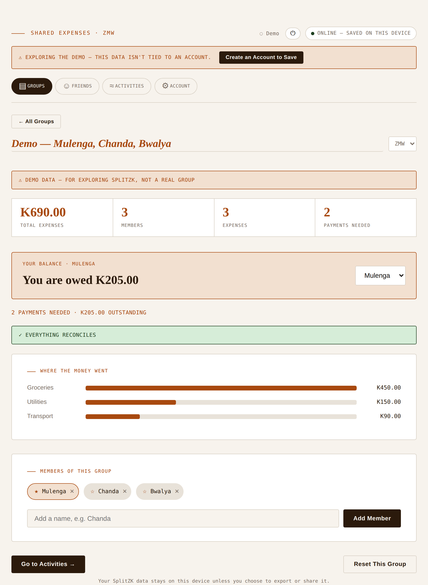
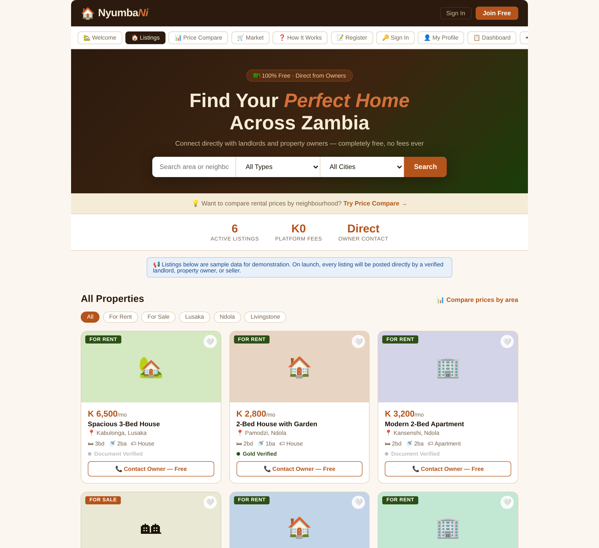
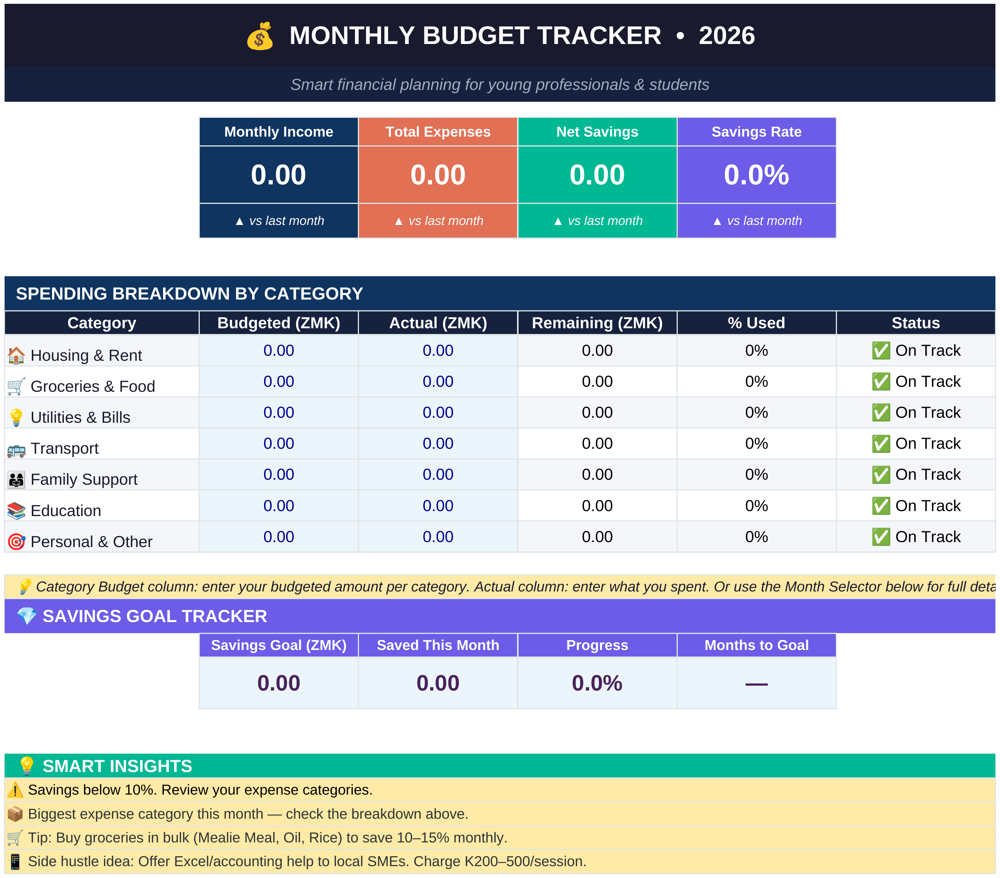

I spend my days reconciling ledgers and my evenings writing code, and the overlap is the point. I build interfaces shaped by someone who has actually worked the numbers side of a business.
I'm an Assistant Accountant at Ultimate Farms Ltd in Ndola, Zambia, and a self-taught front-end developer. Most days I'm reconciling payroll and cost data by hand, which is exactly why I build software the way I do: methodically, with an eye for where numbers, and code, quietly go wrong.
I chose the harder, more deliberate path into tech: learning by building, not by credential. I write every line manually, read documentation before watching tutorials, and don't move to the next step until I understand the current one. Every project here is designed to teach me something real and solve an actual problem, not fill space in a portfolio.
I handle payroll for roughly 30 employees, plus cost accounting, bookkeeping, and cashbook management and reconciliation for a 13,500-bird layer (egg-production) operation that also sells bananas, oranges, and vegetables. In practice the role runs wider than the title: I'm one of three people in the company's administrative management structure alongside the Managing Director and his wife, I supervise around 26 employees at the farm directly, and when the Managing Director is unavailable I take on operational decisions, recommendations, and reporting in his place.
I handle documentation and records for a community organisation of roughly 90 members. We meet every two weeks, and I'm responsible for the member register, meeting minutes, and financial reports that go with each meeting. Reporting matters most in the run-up to an outreach: with one coming up in the next two weeks, that's when I prepare and present the financial and activity reports the organisation relies on before it goes ahead.
A working stack, not a wish list. Everything marked "current" is something I have shipped code with. Everything marked "learning" or "planned" is the next deliberate step on the roadmap, not a placeholder.
Alongside development, I take on freelance and remote work in bookkeeping, accounting support, Excel, payroll, data entry, and administrative work. It's the same discipline shown in the case studies below, applied to your books. This work is separate from my full-time role; nothing here involves confidential employer data.
The trigger was a mismatch between the number of sales recorded and the balances that should have resulted from them, discovered while reviewing the cost-accounting sheets we use ahead of bookkeeping. The gap traced back further than expected, so I had to go back to January 2023 and correct the figures systematically from there. Along the way, errors surfaced across twelve separate categories, the kind that compound quietly until closing balances stop making sense. I audited the entire workbook month by month, traced each error back to its source, and rebuilt it into a clean, reconciled file with verified closing balances.
None of the twelve error categories existed in isolation. Several fed into each other across months, so fixing one in place without tracing its downstream effect would have just relocated the mistake. I was still new to accounting at the time, so the audit had to move chronologically, verifying each month was clean before trusting the next.
A full year of payroll needed to be checked across three independent sources (the payroll register, the cash book, and individual payslips) to confirm every employee had been paid correctly and every entry was properly tagged. Discrepancies between the three don't announce themselves; they have to be hunted down line by line.
Three sources rarely disagree in an obvious way. A mismatch usually shows up as a small rounding-looking gap that's actually a missed entry. Finding those meant reconciling employee by employee, month by month, rather than trusting that totals which looked close enough were actually correct.
While cross-checking cash book entries against current staff, I found a salary payment that didn't match anyone on the active roster. Tracing it back showed an employee who had already left the company was still being paid. Confirming it took about three days of tracing transactions and checking names against employee records, and it's the clearest case for why payroll has to be checked against independent sources rather than trusted on its own.
The Assistant Accountant position had sat vacant for roughly two years before I started, so the company's records were significantly behind on everything: payroll, bookkeeping, petty cash vouchers, purchases, feed expenses, and statutory payments like NAPSA and ZRA. I had never worked as an accountant before, so I started by working closely with the Managing Director while I learned the processes, then took the backlog on directly.
I was learning accounting itself while clearing a two-year backlog under it, with no prior professional experience to fall back on. The two had to happen together: I couldn't wait to be fully trained before starting, and I couldn't fix the records without first understanding what correct looked like. Leaning on the Managing Director's guidance early on, and working through the volume systematically rather than rushing it, was what made the backlog closeable instead of just endless.
Built with fictional data and no connection to real employer records, so you can see the structure and formulas behind the case studies above.
One is live and still evolving through deliberate, tested phases. One is a working prototype that still needs a real backend. One exists today as a personal Excel tool with an app version planned for later, not built yet. All three are rooted in a real gap I've observed, in how people find housing, manage money, and untangle who-owes-who after a shared bill, not dummy apps built to fill a portfolio.
SplitZK exists because "just Mobile Money me back" breaks down the moment three or more people share a bill. It tracks who paid for what (rent, groceries, a trip) and reduces everyone's tangled IOUs down to the fewest possible payments, in Zambian Kwacha, with no spreadsheet required.
SplitZK shipped early on purpose, then kept growing through deliberate, verified phases rather than one big rewrite: real accounts replaced a simple device PIN lock, the navigation was rebuilt around Groups, Friends, and Activities, and the data model was hardened for a future where splits sync across a person's own devices. It's installable as an offline-first app, and the core calculation engine, the part that actually has to be correct, has stayed untouched and independently regression-tested through every one of those changes.

Tracking who-paid-what is easy. Reducing a group's tangled debts to the fewest possible payments is not: it's a matching problem. SplitZK sorts everyone into debtors and creditors, then greedily pairs the largest debtor against the largest creditor until every balance clears, so three friends never end up making six payments when two would settle it.
Every record now carries real UUIDs instead of locally-unique strings, and deletes are soft, groups, expenses, and friends all get a status/tombstone field instead of actually disappearing, so the local data won't need restructuring the day a real multi-device sync layer gets built. None of that changes what the app does today; it's groundwork. The one rule through all of it: after every structural change, the same 10-test calculation harness has to still pass before the change counts as done.
NyumbaNi is a free, direct-from-owner property platform built for the Zambian rental market. It cuts property agents out entirely: landlords post listings themselves, and tenants browse and contact owners directly, at no cost, with no fee to unlock anything.
In Zambia, the rental process often involves a non-refundable viewing fee charged by agents for property visits, followed by a commission of half the rent if the tenant proceeds with the property. NyumbaNi removes all of this, with no agents and no fees at all.

Everything you can click through today runs on sample data hard-coded into the page, there's no backend, no database, no real accounts yet. The real work left is a backend and database for users, listings, and market items; real phone-OTP delivery and session handling; secure, private storage for uploaded NRC documents with an admin review flow; and real image upload to replace the placeholder icons. The front end was the easy part; making all of it real is what's next.
I built the free-contact model without first knowing someone else had already built something close to it. A similar Zambian property app had launched a few months earlier and already picked up a real user base. Reading through its public reviews taught me more than any spec could have: people genuinely like dealing with the owner directly instead of an agent, and the loudest complaints were about listings that stay up long after a property's gone, and, by one account, a paid "AI agent" contact flow that kept repeating itself and handed over numbers that didn't connect. NyumbaNi's free-contact model answers the second problem directly: no paid step standing between a tenant and a real number. The first problem, expiring stale listings automatically, is now on my pre-launch checklist.
I wanted a proper budget tracker for my own finances, so I built one in Excel. It's grown into a full workbook: a dashboard, a transaction log, subcategory-level budgets (not just top-line categories), monthly spending trends, an annual summary, a multi-account view, and a side-hustle income log, with individual tracking sheets for every month across two full years. This is the tool I actually use, day to day, not a demo built to look good.
The plan is to eventually turn this into a real app, tentatively called CariSave, but that work has not started yet. Right now this is entirely an Excel tool, not code. Turning the spreadsheet's logic into an actual app (picking a stack, structuring the data, handling state outside a spreadsheet) is a real jump I haven't made yet, and I'd rather say that plainly here than imply progress that isn't there.

Planned feature set. Items marked (Excel) already work in Budget Tracker Pro today; everything else is a future idea for the app version and hasn't been started.
The Excel version works because a spreadsheet's formulas do the heavy lifting invisibly: running balances, rollups, conditional tips. Turning that same logic into actual code, outside a spreadsheet, is the real challenge, and it's a step I haven't started yet. The price-comparison trust and conflict-resolution problem is a further design question on top of that, and it's even further out.
My ambition is to grow into a full-stack developer who can take a problem from concept to deployed product. I'm working through the fundamentals deliberately, then backend and frontend frameworks, one layer at a time, while applying what I already know from running real financial operations.
Open to freelance bookkeeping, Excel, and payroll support work, as well as collaborations and opportunities in front-end development.